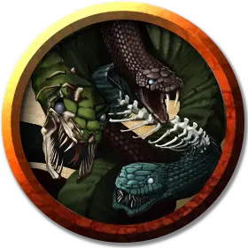

Рой мёртвых змей
Swarm of Undead Snakes
Средний рой крошечной Нежити, без мировоззрения

Класс Доспеха 14
Хиты 36 (8к8)
Скорость 30 футов, плавая 30 футов
| мод | спас | ||
|---|---|---|---|
| СИЛ | 8 | −1 | −1 |
| ЛОВ | 18 | +4 | +4 |
| ТЕЛ | 11 | +0 | +0 |
| мод | спас | ||
|---|---|---|---|
| ИНТ | 1 | −5 | −5 |
| МДР | 10 | +0 | +0 |
| ХАР | 3 | −4 | −4 |
Сопротивление урону дробящий, колющий, рубящий
Иммунитет к урону яд
Иммунитет к состояниям захват, испуг, окаменение, опутанность, отравление, очарование, ошеломление, паралич, сбивание с ног
Чувства слепое зрение 10 футов, пассивное Восприятие 10
Опасность 2 (450 опыта)
Бонус мастерства +2
Среда обитания Болото, Лес
Особенности
Рой. Рой может занимать пространство другого существа, и наоборот, и рой может перемещаться через любой проход, достаточный для Крохотных змей. Рой не может восстанавливать хиты и получать временные хиты.
Природа нежити. Рою не нужен воздух, еда, питье и сон.
Действия
Укусы. Рукопашная атака оружием: +6 к попаданию, досягаемость 0 футов, одно существо в пространстве роя. Попадание: 7 (2к6) колющего урона или 3 (1к6) колющего урона, если у роя половина хитов или меньше. Цель должна совершить спасбросок Телосложения Сл 10, получая 14 (4к6) урона ядом при провале, или половину этого урона при успехе.
Описание
См. дополнительно статью: "Бестиарий: Рои существ"